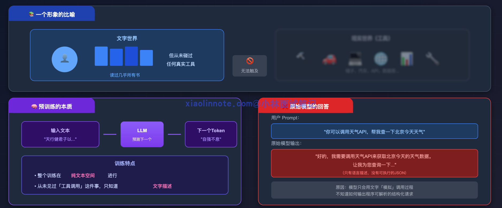
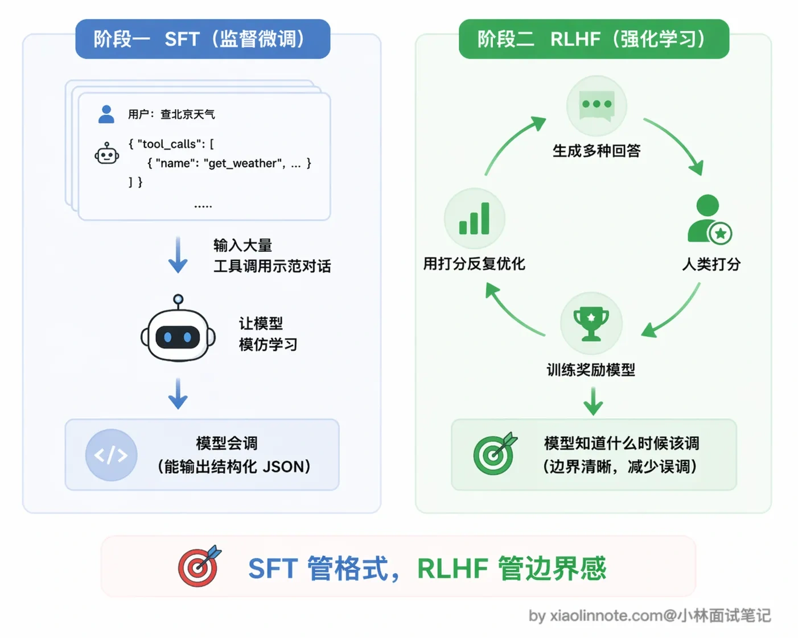
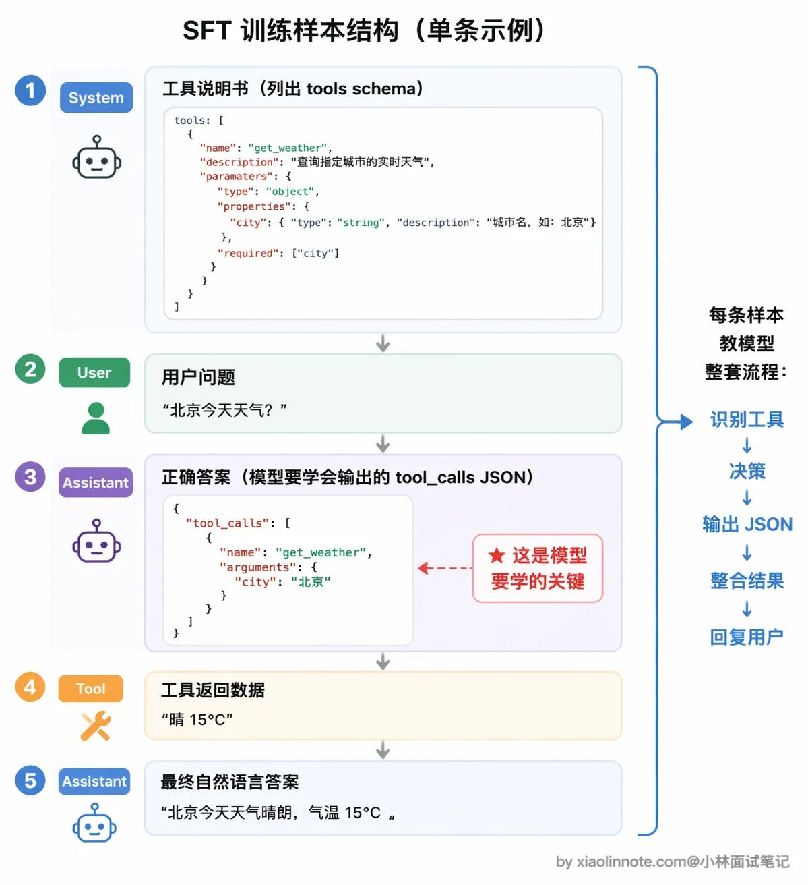
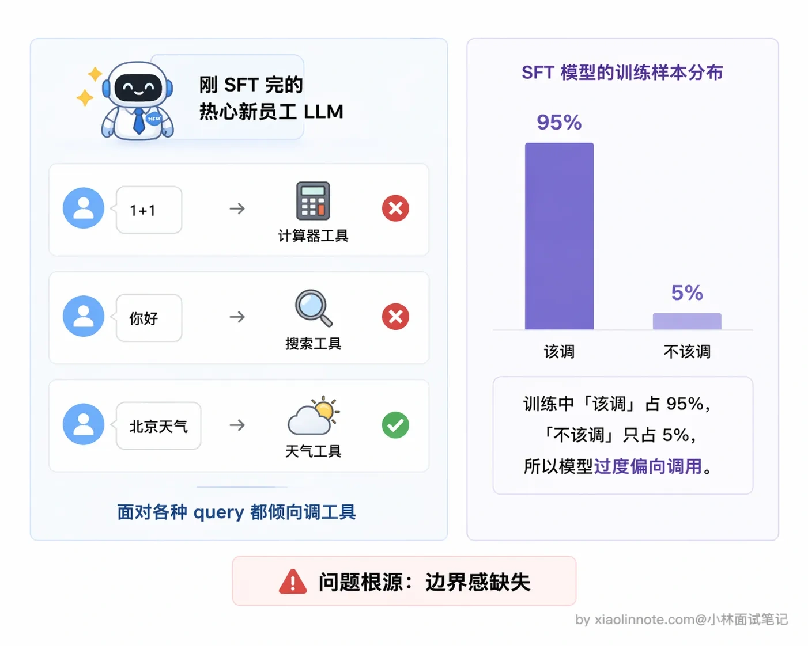
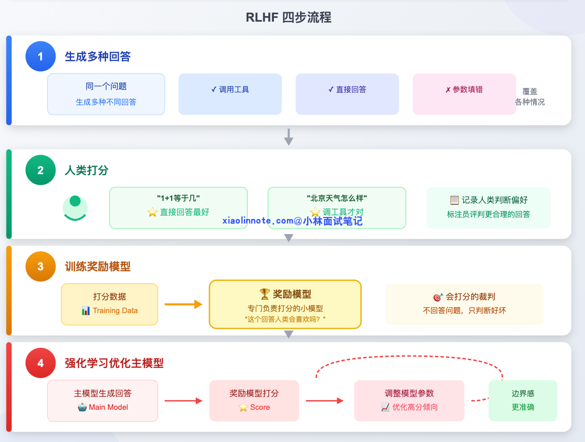
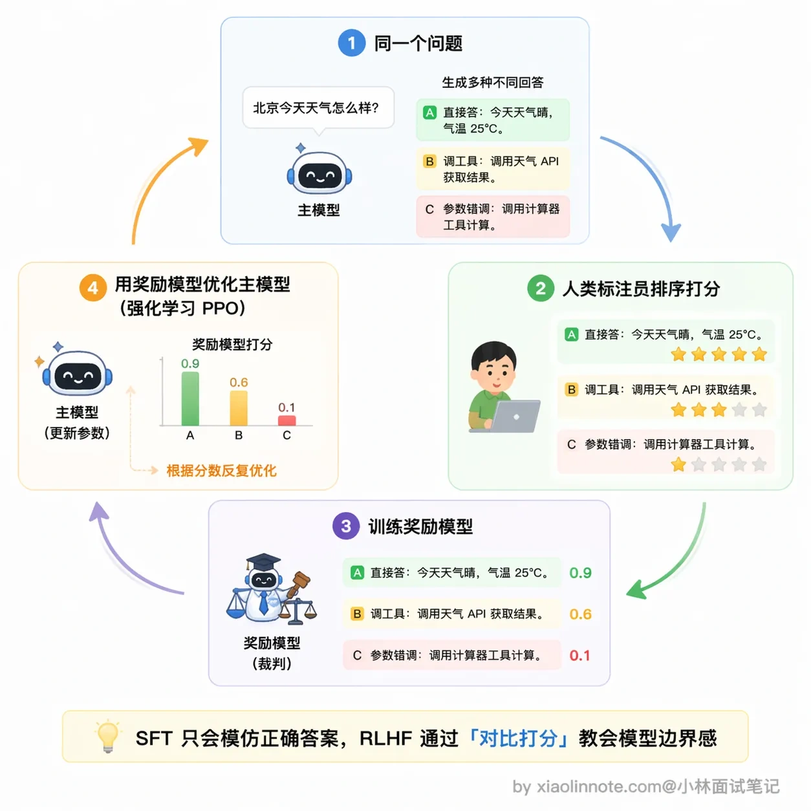
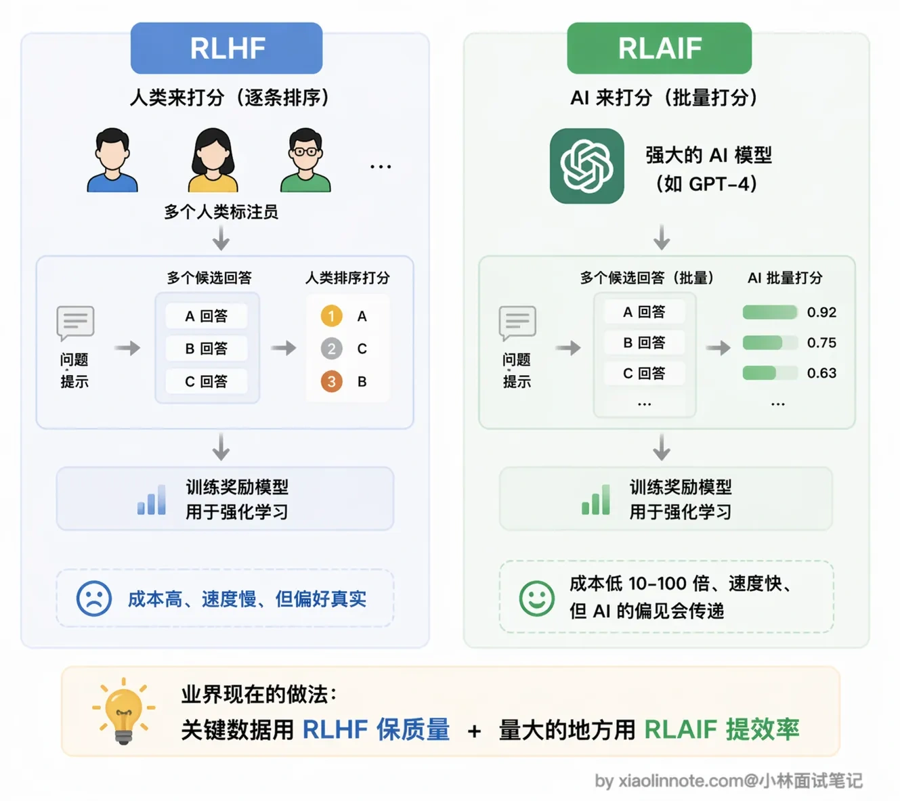
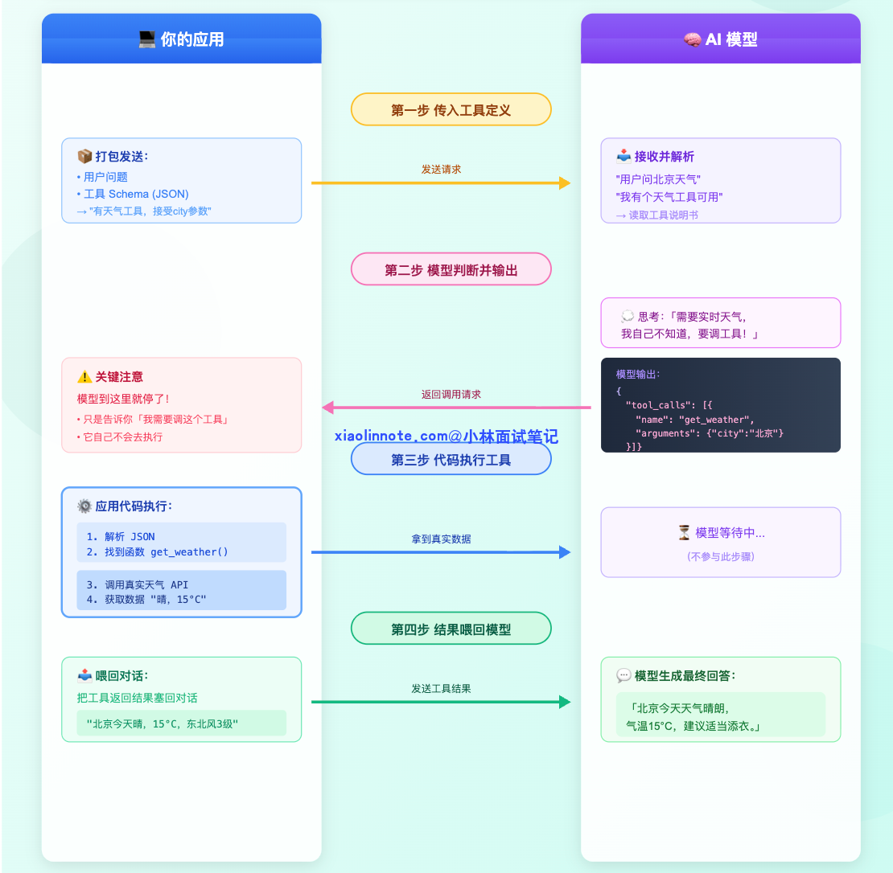
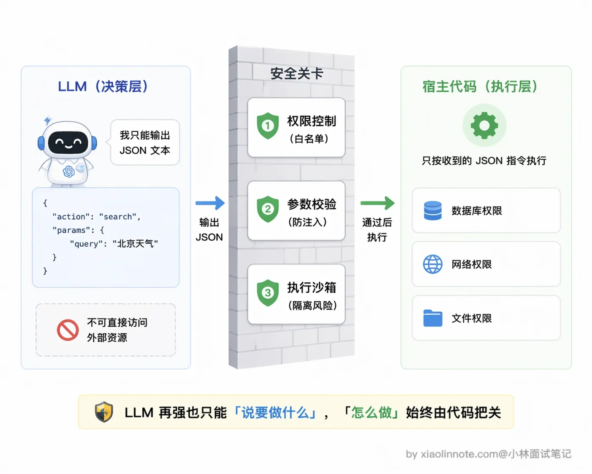

LLM 是如何学会调用外部工具的？
👔面试官：说说大模型是怎么学会调用外部工具的？
🙋♂️我：大模型本身就很聪明嘛，参数量够大，涌现能力一出来，自然就会调用工具了，不需要额外训练吧？
👔面试官：涌现能力说的是参数量到某个阈值后，模型突然展现出小模型没有的理解和推理能力，这是「量变引起质变」。但工具调用要的是输出可解析的结构化 JSON，这是预训练语料里根本不存在的模式，不是参数量大了就自动会的。没训练过的模型遇到「查天气」只会说「我需要查天气 API」，而不是输出可解析的 JSON 调用请求。你说说到底是怎么训练出来的？
🙋♂️我：那应该是用 SFT 微调出来的吧？给模型喂大量工具调用的样本，它学会了就行了。
👔面试官：SFT 只解决了「会不会调」的问题，但「该不该调」呢？用户问「1+1 等于几」，模型也去调计算器工具，这不是画蛇添足吗？SFT 之后还有一个关键阶段你完全没提到，回去把 RLHF 在工具调用训练中的作用搞清楚再来。
看得出来，很多人知道 SFT 但忽略了 RLHF 在工具调用中的关键作用。下面我把「模型怎么学会调工具」这件事完整拆开，两个阶段各自解决什么问题，一次讲透。
💡 简要回答
这道题我分两块来讲：模型怎么被训练出工具调用能力，以及训练好之后运行时是怎么工作的。
训练层面靠两个阶段：
- SFT（监督微调，Supervised Fine-Tuning）：给模型喂大量「工具调用示范对话」，让它通过模仿学会「看到工具描述 -> 判断要不要调 -> 输出结构化 JSON 请求」这整套流程；
- RLHF（基于人类反馈的强化学习，Reinforcement Learning from Human Feedback）：收集人类对「哪种回答更好」的判断，训练一个打分器，再用这个分数反复调整模型，让它学会什么时候不应该调工具。
运行层面，每次请求时，你的应用代码把工具描述（叫 schema，可以理解为工具的说明书）传给模型，模型如果判断需要工具，就输出一段结构化的 tool_calls JSON；你的代码拿到这段 JSON 去真正执行，把结果塞回对话，模型再给出最终答案。
有一点非常关键：模型全程只是在「下指令」，真正执行工具的是你的代码，不是模型本身。这套「模型决策、代码执行」的运行时机制，就是我们常说的 Function Calling。
📝 详细解析
原始 LLM 的世界，为什么不会调工具
想象一个人从出生到成年，只生活在文字的世界里，读过几乎所有的书，却从没接触过任何工具，没用过锤子、没开过车、也没见过 API 是什么。你突然跟他说「去帮我查一下天气 API」，他最多只会用语言描述「我需要查天气 API 来获取数据……」，绝对不会真的去操作工具。

大语言模型在预训练阶段经历的就是这样一个过程，学的是给定前面的文字预测下一个 token（token 可以理解为模型处理文字的最小单位，大致对应一个字或半个词），整个训练过程完全是在文本空间里进行的，模型从未见过「工具调用」这件事。所以哪怕你在 prompt 里写「你可以调用天气 API」，没经过专门训练的模型也只会生成一段自然语言描述，比如「我需要调用天气 API 来回答你」，而不是输出一段可以被程序解析的 JSON 调用请求。
工具调用能力不是天生的，是后天「教」出来的。怎么教？靠两个阶段：SFT 教会怎么调，RLHF 教会什么时候调。

第一阶段：SFT，让模型「见过」工具调用
SFT 是 Supervised Fine-Tuning（监督微调）的缩写，核心思路非常直接：给模型看大量正确的示例，让它学会模仿。就像培养一名新员工，前期让他看几百份填好的工单，他自然就学会了「遇到这类问题该怎么写工单、该走哪个流程」。
要让模型学会工具调用，就要构造专门的训练数据。一条完整的训练样本长这样：
首先是 System 消息，也就是工具说明书，列出模型现在有哪些工具可用，每个工具叫什么名、能做什么事、需要什么参数，模型从这里「认识」工具。接着是 User 消息，就是用户的提问，比如「北京今天天气怎么样？」。
然后到了最关键的部分：Assistant 的调用请求。注意，这里的「正确答案」不是自然语言回答，而是结构化 JSON，类似 {"tool_calls": [{"name": "get_weather", "arguments": {"city": "北京"}}]}。这就是模型需要学会输出的东西。为什么是 JSON 而不是自然语言？因为 JSON 格式固定、机器好解析，你的代码才能准确读到「调哪个工具、参数是什么」。
再往后是 Tool 消息，模拟工具返回的数据，比如「晴，15°C，东北风3级」。最后是 Assistant 的最终回答，模型看到工具结果后，给出自然语言答案：「北京今天天气晴朗，气温15°C……」。

模型在几十万甚至上百万条这样的样本上反复训练，就学会了整套流程：识别工具定义、判断要不要调、输出格式规范的 JSON 请求。
训练数据的来源通常有两种：人工标注，成本高但质量好，一般用于构造核心的种子数据；用更强的模型（比如 GPT-4）自动批量生成，再人工抽查，成本低、量大，是业界现在的主流做法。
SFT 的短板，会了，但不知道「该不该调」
SFT 让模型学会了「调工具」这个动作，但它不知道什么时候该调、什么时候不该调。你可以想象一个刚培训完的新员工，过于热情，每件事都想走流程，有人问他「1+1 等于几」，他也要去查手册，这明显多此一举，直接回答就行。
为什么会这样？因为 SFT 的训练样本里，「该调的场景」占了绝大多数（毕竟我们就是要教它调工具），模型在模仿的过程中会过拟合这种「积极调用」的倾向，没看过足够多的「不该调」反例。再加上训练信号只告诉它「这是正确答案」，没有告诉它「为什么不该调也是一种正确」，所以它的边界感天然就弱。
SFT 之后的模型也有类似的毛病：可能对简单问题也尝试调工具，或者遇到工具调用失败时不知道该怎么处理，行为边界感很弱。

这个问题，需要第二阶段的 RLHF 来解决。
第二阶段：RLHF，用反馈建立边界感
RLHF 是 Reinforcement Learning from Human Feedback（人类反馈强化学习）的缩写。如果说 SFT 是让新员工看示例学规范，那 RLHF 就是老板持续给他的工作表现打分，帮他建立判断力。
它的流程分四步：

第一步是生成多样回答。对同一个问题，让模型生成几种不同的处理方式，有的调了工具，有的直接回答，有的参数填错了，故意覆盖各种情况。
第二步是人类打分。标注员评判哪种回答更合理，比如「1+1 等于几」直接回答最好，「北京天气怎么样」调工具才对。这批打分数据就记录了人类的判断偏好。
第三步是训练奖励模型。用这批打分数据，单独训练一个小模型，专门负责打分，它不回答问题，只判断「这个回答人类会喜欢吗」。你可以把它理解成一个「会打分的裁判」。
这一步很关键，也容易被忽略：奖励模型的打分能力本身就是从人类标注员的偏好数据里学出来的，换句话说，人类的判断被「蒸馏」进了这个裁判。所以如果人类标注员自己水平不稳定、标准不一致，奖励模型就会学到一个歪的打分标准，后面主模型再怎么被它优化，方向也是歪的。
第四步是用强化学习优化主模型。拿奖励模型的打分不断调整主模型的参数，让主模型越来越倾向于产出「高分回答」，也就是边界感更准确的工具调用行为。

经过这个过程，模型逐渐学会了更微妙的判断：能直接回答的就直接回答，不要多此一举调工具；需要实时数据、需要执行操作的，才去调。这个边界感是 SFT 给不了的，必须靠反馈信号来塑造。
RLAIF（AI Feedback）是 RLHF 的变体，用另一个 AI 代替人类标注员打分，成本更低、速度更快，现在业界也很常用，效果和人工反馈相差不大。

运行时，训练好之后怎么用
训练阶段结束，模型上线了。每次你的应用调用模型时，流程是这样的：

首先，你的应用代码把「有哪些工具可用」打包成 JSON 格式（叫做 schema，也就是工具的说明书），连同用户的问题一起发给模型。比如告诉模型：「你现在有一个天气查询工具，接受 city 参数，返回该城市的实时天气。」
模型读完工具定义和用户问题后，做了一个判断：这个问题需要查实时天气，我自己不知道，需要工具帮忙。于是它不直接回答，而是输出一段结构化的 JSON：
{
"tool_calls": [{
"name": "get_weather",
"arguments": {"city": "北京"}
}]
}
注意，模型到这里就停了，它只是告诉你「我需要调这个工具，参数是这个」，它自己不会去执行。
接下来就轮到你的代码上场了。你的应用代码解析这段 JSON，找到对应的函数，真正去调天气 API，拿到实际数据。
拿到结果之后，你把工具返回的结果（比如「北京今天晴，15°C，东北风3级」）塞回对话历史，再次调用模型，模型这才组织成一句话回答用户。
这套「模型输出结构化调用请求 -> 代码执行 -> 结果喂回」的机制，有一个专有名词：Function Calling。换句话说，Function Calling 就是大模型工具调用能力在运行时的具体实现形式。
一个关键认知：模型只负责「决策」，不负责「执行」
这是理解工具调用最重要的一点。
模型在整个过程中只做了一件事：判断要调哪个工具、参数填什么，然后把这个决策用 JSON 格式输出出来。真正去跑函数、访问网络、查数据库的，是你写的宿主程序代码。
这个分工设计得很合理：LLM 擅长理解意图和推理，但不应该有直接操作系统资源的权限；宿主程序负责执行，可以做权限控制、参数校验、执行沙箱等安全措施。这样的设计让工具调用既灵活又安全，是目前主流工具调用框架的核心设计原则。

🎯 面试总结
回顾开头的面试对话，第一个雷是以为模型参数量够大就自然会调工具，这是把「语言涌现能力」和「工具调用能力」搞混了。工具调用需要输出结构化 JSON，这不是预训练能学到的，必须经过专项训练。
第二个雷是只知道 SFT 而忽略了 RLHF，SFT 解决「会不会调」，RLHF 解决「该不该调」，两个阶段缺一不可。
面试回答这道题，核心要讲清楚两个阶段各自的作用。
SFT 通过大量包含完整工具调用流程的对话样本，让模型学会识别工具定义、判断要不要调、输出规范 JSON 的整套流程；RLHF 通过人类打分训练奖励模型，再用强化学习调整主模型，让它建立「能直接回答就不调工具」的边界感。
另外要提到运行时的 Function Calling 机制，模型只负责决策输出 JSON，代码负责执行，这个分工设计是关键认知。
如果能再补充 RLAIF 作为 RLHF 的低成本替代方案，就更完整了。